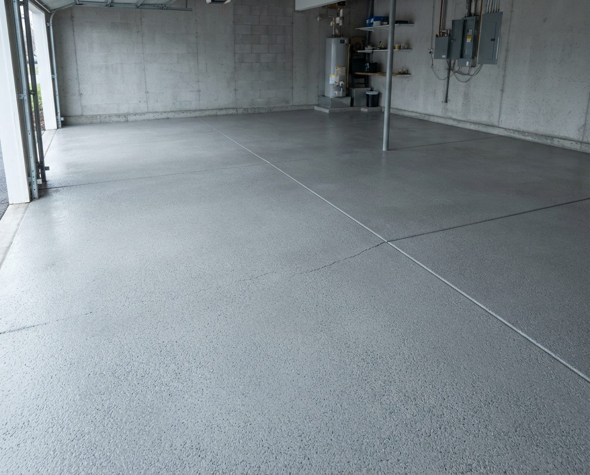
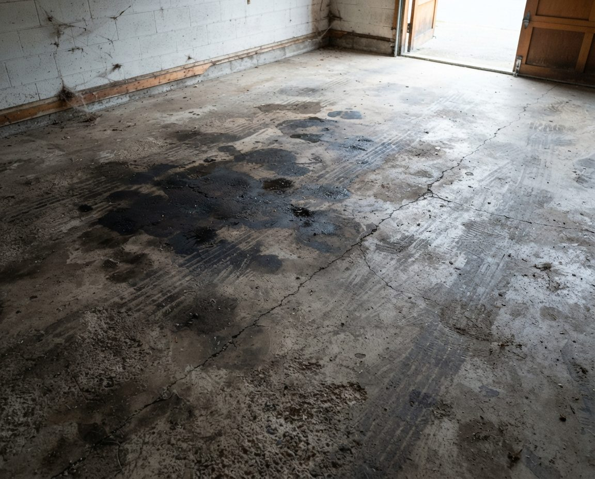

You paid to have the garage floor coated. One Calgary winter later it has white rings where the slush dried, a strip of pickle grit inside the door and brown tire marks under the car that sat all summer. We clean coated floors with methods the coating can take, follow your installer's care sheet, and keep every bucket of soapy water out of the storm drain.
This page is for garage floors with a coating on them: epoxy, polyaspartic, polyurea, or a flake system with a clear topcoat. Those floors need different cleaning from bare concrete. The hot water, rust removers and full-pressure surface cleaner that rescue a salty bare slab can dull or lift a coating. If your floor is bare or only sealed, our garage floor cleaning page is the one you want.
For a quote, email inquiry@garagescape.ca three photos: the whole floor from the overhead door, the worst salt ring or tire mark close up, and the floor edge right at the door. If you know who installed the coating and when, tell us. Or call (587) 804-9266 and describe it.

If the floor was already coated when you bought the house, you may not know what's on it. Before you book anything, drip a little water on a clean spot away from the door and watch it for a minute.
| What you see | What it probably is | Which page |
|---|---|---|
| Gloss or satin surface, coloured chips scattered through it, water beads and sits | Flake system: epoxy or polyurea base with a clear topcoat, often polyaspartic | This page |
| Solid colour with a sheen, no chips, water beads | Solid-colour epoxy or polyaspartic | This page |
| Looks like plain grey concrete, but water beads instead of soaking in | Penetrating sealer (silane or siloxane) | Garage floor cleaning, with a gentler rinse |
| Water darkens the concrete and soaks in within a minute | Bare concrete | Garage floor cleaning |
| Coating in some places, bare grey patches in others, edges curling up | A coating that is failing | This page for the clean, then an installer for the repair |

The City of Calgary puts roughly 40,000 to 50,000 tonnes of road salts on its streets each winter, and what it uses depends on the temperature. Its road salt management plan says rock salt and salt brines go down when the road surface is between 0 and -14°C. Below -15°C, with colder weather forecast, crews switch to Pickle, a sanding chip mix of 3% salt and 97% gravel, plus liquid calcium chloride. The City also uses a beet juice and salt brine as an anti-icer. Each of these reaches your garage on the tires, and each one looks different on a coated floor.
| What came in on the tires | What it looks like on the coating | How we take it off |
|---|---|---|
| Rock salt and salt brine | Crusty white rings where slush melted and dried, heaviest under the wheel wells and along the door | Warm water and pH-neutral cleaner, soft brush, then two rinses |
| Liquid calcium chloride | A dull, slightly tacky film that looks damp even on a dry day, because calcium chloride pulls moisture out of the air | More rinse passes than salt alone; one wash leaves a haze |
| Pickle gravel | Sharp grit in a band inside the door and in the tire lanes; fine scratches in the topcoat where it's been driven over | Dry removal first with soft brooms and a blower. No water until the grit is gone |
| Chinook melt | Puddles that collect at control joints and low spots, then dry into tide lines | Joints brushed out and rinsed along their length |
| Summer heat on parked tires | Yellow or brown tire-shaped stains from plasticisers in the rubber | Cleaner made for coated floors and patience; some lighten rather than vanish |
Calcium chloride takes the most rinsing. A floor that looks clean after one mop turns white again as it dries, because the chloride was only spread around. We rinse until the rinse water stops clouding.
Many coating installers hand over a care sheet, and some tie the warranty to it. Before we put anything on your floor, we ask:
No care sheet? We default to the gentlest method that works: warm water, a pH-neutral cleaner, soft brushes and microfibre. We try any cleaner on a small spot under the shelving first and look at it dry before we do the whole floor.
Our bare-concrete floor service uses hot water, oxalic rust remover and a rotary surface cleaner because bare concrete can take them. On a coating, these stay in the truck:
One thing we suggest you keep off it too: rubber-backed mats. Some rubber backings stain lighter coatings over a few months. Foam or vinyl-backed mats are the safer choice under a dripping car.
Most garage driveways slope to the street, and the gutter at the bottom is a storm drain. In Calgary, storm drains run to the rivers without treatment, and the Stormwater Bylaw 37M2005 says only water may go into them. The City lists all soaps and detergents as prohibited, biodegradable ones included. The specified fine for washing a car with soap on the street is $3,000, and fines under the bylaw run from $75 to $10,000.
A garage floor scrubbed with cleaner and squeegeed out the overhead door sends that water to the same gutter. So on a coated-floor job:
A lot of coated floors sit under cars their owners care about. A few house rules make the day simple:
Tire marks are the most common complaint on a show-garage floor. A car parked in the same spot for months, especially through a hot summer, can leave a stain as plasticisers move out of the rubber into the coating. We lighten them with a cleaner made for coated floors and tell you if one is in the coating rather than on it. Tire pads under a stored car, or moving it every few weeks, stops the next set.
Most owners of a coated floor get by with a blower or dust mop in winter and two proper cleans a year.
If the spring clean is part of a bigger reset, our spring garage cleanout clears the stored gear first so the whole floor is open.
A clean floor is the best time to look at a coating. After each job you get a short written note with photos of anything we saw:
Our cleaning crew doesn't patch or recoat. If the note says the floor needs a topcoat refresh or a repair, take it to your original installer first, since a warranty may cover it. If you're weighing a new coating, our Calgary epoxy flooring guide explains what our winters do to each system, and our garage flooring page covers the installation side.
We quote coated-floor cleaning from your three photos. These are the things that move the price:
Coated garage floors anywhere in Calgary, plus acreages close to the city: newer attached garages in communities like Aspen Woods and Springbank Hill, and coated shop floors on Bearspaw and Springbank acreages. Older inner-city lane garages are more often bare concrete; for those, see Mount Royal and Elbow Park. For a whole-garage clean, walls and shelves included, see garage cleaning in Calgary.
Sometimes, and only gently. Check your installer's care sheet first; if it says no pressure washer, we don't use one. If it allows one, Coated.ca's guidance is to stay below 1,500 PSI with a wide fan tip and keep the wand moving, and never to aim at edges, chips or areas that are already lifting. A garden hose and a soft brush do most of the work on a coated floor anyway.
Dry first, then wet. Get every bit of grit off with a soft broom, dust mop or leaf blower, because wet grit under a mop or tire scratches the topcoat. Then wash with warm water and a pH-neutral cleaner, scrub with a soft brush, and rinse more than once. In Calgary the extra rinses matter, because calcium chloride from winter roads leaves a film that one pass doesn't lift.
The one your installer names on the care sheet. If there isn't one, a pH-neutral floor cleaner diluted in warm water is the safe default. Avoid acidic cleaners such as vinegar or rust removers for routine use, bleach-based products, and citrus solvents used again and again; over time they can dull the finish.
A few drops of mild dish soap in a bucket of warm water is fine on most coatings, and it's good on fresh oil drips. Use less than you think and rinse well, because soap left on a glossy floor dries to a streaky film and makes it slippery. In Calgary, keep that soapy water inside: the Stormwater Bylaw treats all soaps and detergents as prohibited in the storm sewer, so it shouldn't run down the driveway.
In Calgary, three things. A gloss coat shows every white salt ring and grit scratch, so it looks dirty sooner than grey concrete does. It's slippery with slush or soap on it. And lower-grade epoxy can soften under hot tires and pick up or stain, which polyaspartic and polyurea topcoats generally resist better. All three are manageable with two proper cleans a year.
It depends mostly on the product and the prep. Our Calgary epoxy flooring guide puts a water-based DIY kit at 3 to 5 years before visible wear, peeling or salt damage, and a professional 100% solids epoxy with a polyurethane topcoat at 12 to 20 years with basic maintenance. At five years, look for a dull lane where the tires run, scratches through the topcoat, peeling at the overhead door edge, and stains that won't clean out.
With plain water, yes. Under Calgary's Stormwater Bylaw 37M2005 only water may enter the storm sewer, all soaps and detergents are prohibited (biodegradable ones included), and the specified fine for washing a car with soap on the street is $3,000. A garage floor washed with soap and squeegeed out the door ends up in the same gutter, which is why we pick up soapy water with a wet-vac instead.
We quote from three photos: the whole floor from the door, the worst salt ring or tire mark close up, and the edge at the overhead door. What moves the price is the number of bays, how heavy the winter film is, whether there are set-in tire marks, how many cars or a lift we work around, how much stored gear has to come off the floor, and whether it's booked alongside a cleanout.
The whole floor from the door, the worst salt ring or tire mark, and the edge at the overhead door. Add the installer's name if you have it, and we'll tell you how we'd clean it and what it will take.
Epoxy, polyaspartic, polyurea and flake-coated garage floors across Calgary and nearby acreages.